So, the process began with using Eagle software, a very specific tool to designing circuit boards to, well, design a circuit board. Upon adding the fab.lbr into Eagle, I selected all my needed components, from Resistors, Capacitors, Resonator, LED, Switch, FabISP, and ATTINY44, etc., I connected all of my components via the Wires Command, and was left with a Schematic that looks a little something like this:
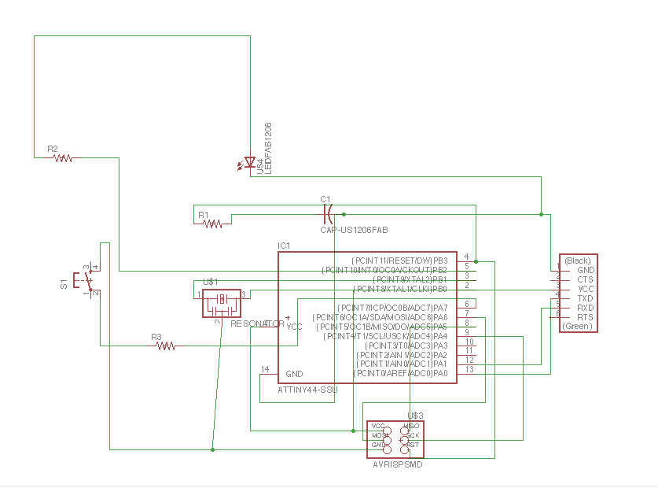After clicking on the "Board" function, I then arranged my board components in a way that led to the least amount of crossover for wires. I then hit "Autoroute" with a High level of effort (though, I am not sure what it would alternatively look like if I decided to use Medium or Low Effort. After moving some wires to create my desired shape and to allow the soldering process down the road a little less strenuous (aka making sure some parts weren't too close together), I hid all of the layers, except the top, and VOILA!
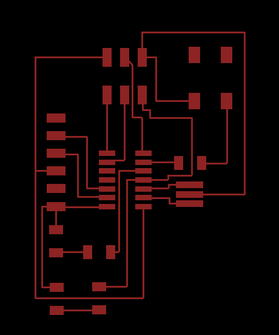After exporting this file with a DPI of 1500 and Monochrome, I then imported it into GIMP, to create my trace file and add some character to the board itself. Even though I was going for a clock in the visual side of things, it ended up looking more like a cute bear :)
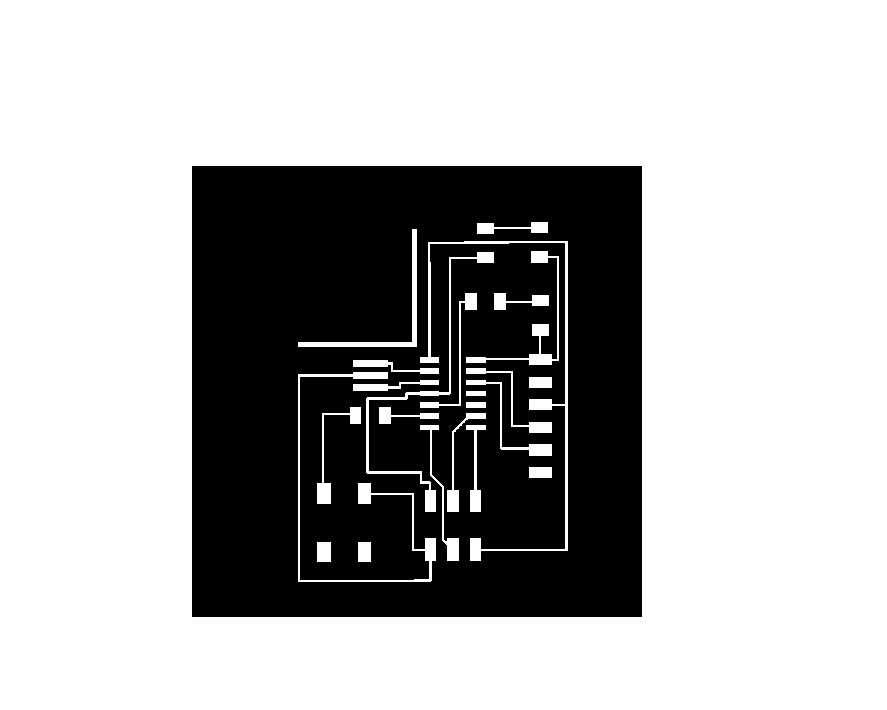The funniest part about this week was that using the software (which if you haven't gathered by the past weeks, always gives me trouble) went rather smoothly. Instead, the physical part of the fabrication is what brought me immense frustration. All a part of the process, I guess.....
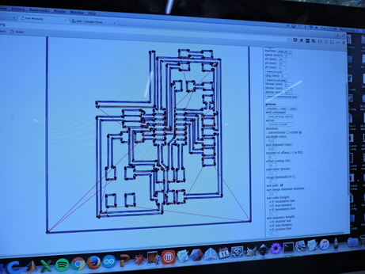Following four different iterations of this process, and with the help of lovely staff members/TA's/peers, I was finally successful. The challenges I encountered with this machine were related to Scale and Cut Depth/Zeroing the 1/64" bit. Before my final successful attempt, this is what I was left with!
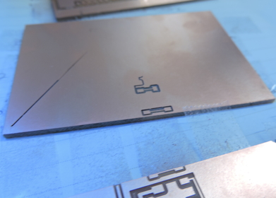 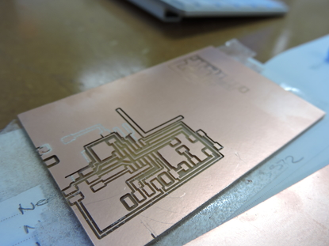 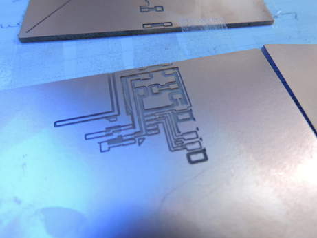 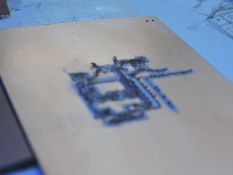After feelings of defeat, I left and returned again another day. When I came in, I set up the machine, and a lovely TA helped me acquire a larger piece of copper, so that I wouldn't be confined into a small surface area, running the risk of my board being milled off the copper plate. And after the first go around of the board, I was met with success!!! Cue the applause!)
I loaded up the 1/32" bit and began the trace--however, before the bit even made it halfway around the first trace, it punctured through the board and the copper plate was ripped off the sacrficial layer :(
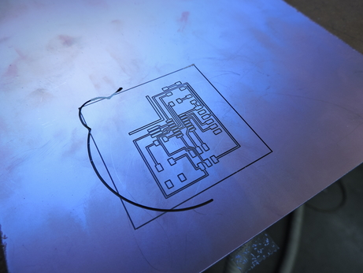Upon great triumpth, I added more double stick tape on the bottom of the plate, loaded up the settings and to my surprise...
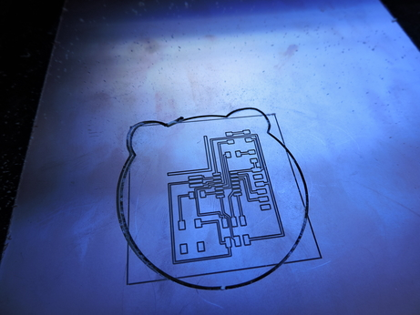So, I gathered up all of my parts, including the button and a Blue LED, consulted my Eagle trace and after the relaxing processing that is soldering:
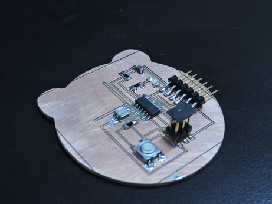 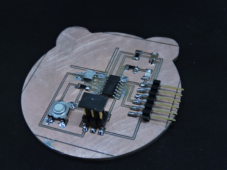I didn't get a chance to program my board, but hopefully when the time comes I will be successful. *fingers crossed* In the meantime my board is chilling like:
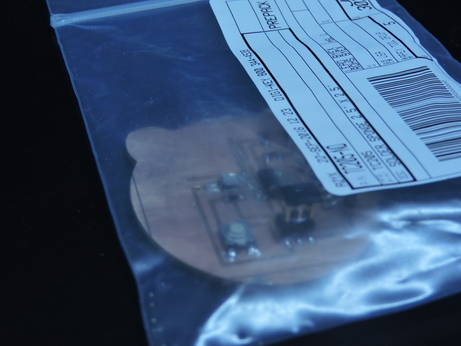